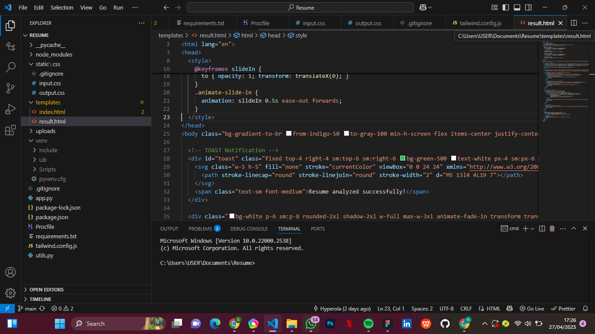
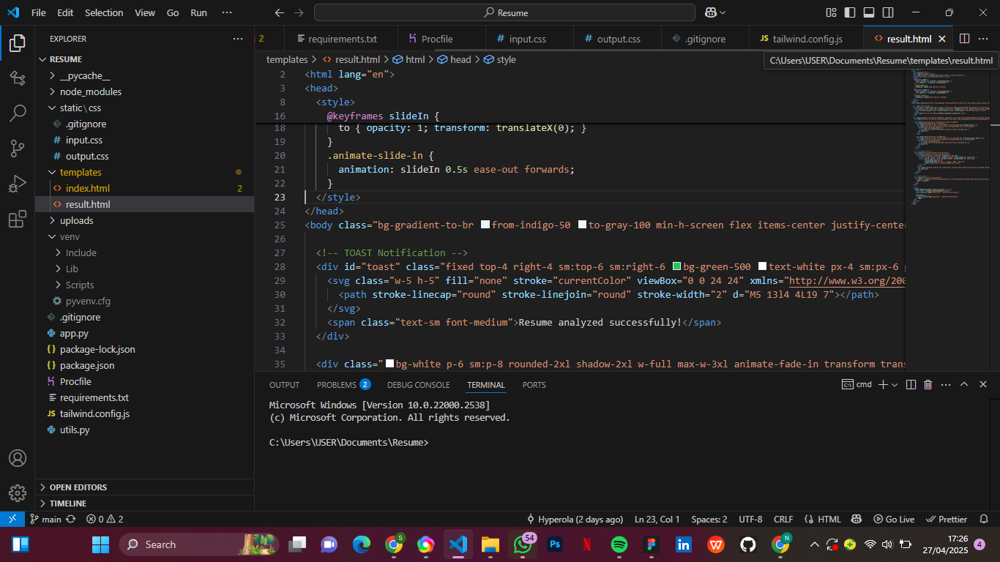

Novaspire Résumé Analyzer
UI/UX Design + Front-end
Overview
Novaspire Résumé Analyzer is a web application designed to simplify the résumé screening process by automatically extracting skills from uploaded PDF documents. While the backend parsing logic was handled separately, I led the full frontend development, UI/UX design, and deployment of the application.
The Challenge
Recruiters often spend too much time manually scanning résumés for relevant skills. The goal was to create a clean, user-friendly tool that allows users to upload a résumé and instantly view extracted skills, improving efficiency.
My Role
- UI/UX Design: Designed a simple, intuitive layout using TailwindCSS, focusing on clean visual hierarchy and easy navigation.
- Frontend Development: Built the user-facing application, handling file upload flows, loading states, and dynamic skill displays.
- Deployment: Deployed the full-stack application to Render, ensuring smooth hosting and live updates.
Process
Wireframing and Prototyping: Started with basic Figma sketches to define user flows and core interactions.
Frontend Implementation: Developed the responsive web pages, connected them to the backend API, and styled them for consistency across devices.
Integration with Backend: Worked closely with the backend structure to ensure smooth file uploads and skill extraction displays.
Hosting: Set up the deployment pipeline on Render, ensuring a live, accessible version of the app.
Challenges
Backend Coordination: Adjusting frontend file upload and response handling to match backend endpoints and outputs.
Maintaining Simplicity: Keeping the interface minimal while ensuring functionality felt complete, even at an early MVP (Minimum Viable Product) stage.
Results
A fully responsive web app that allows users to upload a résumé and immediately see extracted skills.
Seamless frontend experience with clear UI states (uploading, loading, displaying results).
Successful deployment to production using Render hosting.
What I Learned
API-Focused Frontend Development: Designing for real-world backend integration.
UI/UX Skills: Deepening my skills in building clean, minimal interfaces.
Deployment: Setting up and managing deployment environments for full-stack applications.
Tech Stack
TailwindCSS | Flask (backend) | Render (deployment)
Visuals
 
